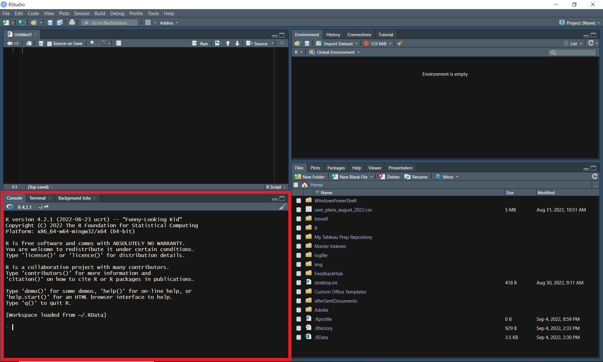
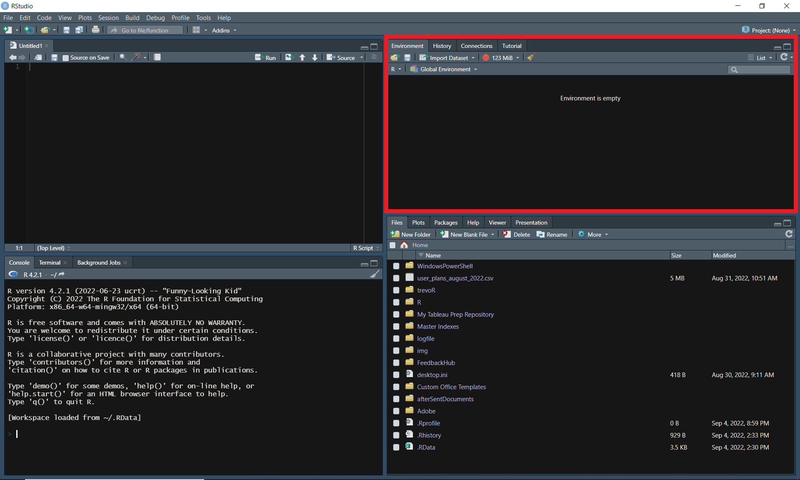

2 Getting Familiar with R Studio
To begin, we are going to walkthrough how to customize your version of R Studio to make it the most comfortable environment for you personally. Following this, we are going to walk through the four panes of R Studio. At a glance, R Studio may seem overwhelming; however, by the end of this chapter you will have learned the essentials needed to embark on your data analysis journey.
2.1 Customization
You are able to customize how your version of R Studio looks by following these steps:
- Open R Studio and choose ‘tools’ from the toolbar
- Choose ‘Global Options’

- Choose ‘Appearance’ and select your favorite theme from the ‘Editor Theme’ section

- Press ‘Apply’
There are other customization options avaialable as well. Feel free to explore the “Global Options” section to make your version of R Studio your own.
2.2 Source Pane
The source pane is the top left pane in R Studio. This is where you will write and edit your code.

If you don’t see the source pane, you may need to create a new R Script by pressing “Ctrl + Shift + N” (“Cmd + Shift + N” on Mac) or by selecting “R Script” from the “New File” dropdown in the top left corner.

Each element of the source pane is outlined below.
- Show in New Window- This allows you to pop the source pane into a new window by itself.
- Save Current Document- This saves the file contained in the tab you currently have active.
- Source on Save- Automatically sources your file every time you hit save. “Sourcing” is similar to “Running” in the sense that both will execute your code; however, sourcing will execute your saved file rather than sticking lines of code into the console.
- Find/Replace- this feature allows you to find and replace specified text, similar to find and replace features in other tools such as Excel.
- Code Tools- This brings up a menu of options which help you to code more efficiently. Some of these tools include formatting your code and help with function definitions.
- Compile Report- This allows you to compile a report directly from an R script without needing to use additional frameworks such as R Markdown.
- Run Current Selection- This allows you to highlight a portion of your code and run only that portion.
- Re-run Previous Code Region- This option will execute the last section of code that you ran.
- Go to Previous/Next Section/Chunk- These up and down arrows allow you to navigate through sections of your code without needing to scroll.
- Source Contents- This option will save your active document if it isn’t already saved and then source the file.
- Outline- Pressing this option will pop open an outline of your current file.
- Adjust Frame Size- These two options will adjust the size of the source pane inside of R Studio.
- Syntax Highlighting- This allows you to adjust the syntax highlighting of your active document to match the highlighting of other file types.
- “Jump To” Menu- This menu allows you to quickly jump to different sections of your code.
- Cursor Position- This displays your current cursor position by row and column.
- Row Numbers- The lef-thand side of your document will display the row number for each line of your code.
- Back/Forward- These arrows are navigation tools that will allow you to redo/undo the following actions: opening a document (or switching tabs), going to a function definition, jumping to a line, and jumping to a function using the function menu (Paulson 2022).
- Tab- This is a tab in the traditional sense, meaning you are able to have a collection of documents open displayed as tabs. These tabs will have the title of your document and often an icon of some sort to demonstrate the file type.
2.3 Console
The console pane is the bottom left pane in R Studio. This pane has three tabs: “Console”, “Terminal”, and “Background Jobs”.
The “Console” tab is where you will be able to run R code directly without writing a script (this will be covered in the next chapter).
The “Terminal” tab is the same terminal you have on your computer. This can be adjusted in the global options.
The “Background Jobs” tab is where you can start and manage processes that need to run behind the scenes.

2.4 Environment
The environment pane is the top right pane in R Studio. This is where you will manage all things related to your development environment. This pane has four tabs: “Environment”, “History”, “Connections”, and “Tutorial”.
The “Environment” tab will display all information relevant to your current environment. This includes data, variables, and function. This is also the place where you can view and manage your memory usage as well as your workspace.
The “History” tab allows you to view the history of your executed code. You can search through these commands and even select and re-execute them.
The “Connections” tab is where you can create and manage connections to databases.
The “Tutorial” tab delivers tutorials powered by the “learnr” package.

2.5 Files
The files pane is the bottom right pane in R Studio. This pane has six tabs: “Files”, “Plots”, “Packages”, “Help”, “Viewer”, and “Presentation”.
The “Files” tab is a file explorer of sorts. You can view the contents of a directory, navigate to new directories, and manage files here.
The “Plots” tab is where the output of your generated plots will show up. You can also export your plots from this tab.
The “Packages” tab allows you to view all available packages within your environment. From this tab, you can read more about each package as well as update and require packages.
The “Help” tab allows you to search for information about functions to include examples, descriptions, and available parameters.
The “Viewer” tab is where certain types of content such as quarto documents will be displayed when rendered.
The “Presentation” tab is similar to the “Viewer” tab except the content type will be presentations.

2.6 Resources
- “Editing and Executing Code in the RStudio IDE” from the R Studio Support team: https://support.rstudio.com/hc/en-us/articles/200484448-Editing-and-Executing-Code
- “Code Folding and Sections in the RStudio IDE” from the R Studio Support team: https://support.rstudio.com/hc/en-us/articles/200484568-Code-Folding-and-Sections-in-the-RStudio-IDE
- “Keyboard Shortcuts in the RStudio IDE” from the R Studio Support team: https://support.rstudio.com/hc/en-us/articles/200711853-Keyboard-Shortcuts-in-the-RStudio-IDE
- “Navigating Code in the RStudio IDE” from the R Studio Support team: https://support.rstudio.com/hc/en-us/articles/200710523-Navigating-Code-in-the-RStudio-IDE
3 Programming Basics
This chapter will walk you through how to execute code and write scripts in R. You will then build upon that knowledge by learning about comments, variables, operators, functions, loops, conditionals, and libraries. While this chapter is titled “Programming Basics”, the knowledge you will have learned by the end of this chapter is enough for you to accomplish a huge variety of tasks.
3.1 Executing Code
When working in most programming languages, you will generally have the option to execute code one of two ways:
- in the console
- in a script
3.1.1 Console
The first way to run code is directly in the console. If you’re working in R Studio, you will access the console through the “console” pane.
Alternatively, if you downloaded R to your personal computer, you will likely be able to search your machine for an app named “RGui” and access the console this way as well.

In the following example, the text “print(3+2)”” is typed into the console. The user then presses enter and sees the result: “[1] 5”.
print(3+2)[1] 5You may be wondering what “[1]” represents. This is simply a line number in the console and can be ignored for most practical purposes. Additionally, most of the examples in this book will be structured in this way: formatted code immediately followed by the code output.
3.1.2 Script
You likely will be using scripts most of the time when working in R. A script is just a file that allows you to type out longer sequences of code and execute them all at once.
For those of you following along in R Studio, you can create a script by pressing “Ctrl + Shift + N” on Windows or by selecting “R Script” from the “New File” dropdown in the top left corner.
From here you can type the same command from before into the source pane. Next, you’ll want to save your file by pressing “Ctrl + S” on Windows or by selecting “Save” from the “File” dropdown in the top left corner. Now just give your file a name and your file will automatically be saved as a “.R” file.
Finally, run your newly created R script by pressing the “source” button.
3.3 Variables
Variables are used in programming to give values to a symbol. In the following example we have a variable named “rate” which is equal to 15, a variable named “hours” which is equal to 4, and a variable named “total_cost” which is equal to rate * hours.
rate <- 15
hours <- 4
total_cost <- rate * hours
print(total_cost)[1] 603.4 Operators
An operator is a symbol that allows you to perform an action or define some sort of logic. The following image demonstrates the operators that are available to you in R.

3.4.1 Arithmetic Operators
Arithmetic operators allow users to perform basic mathematic functions. The examples below demonstrate how these operators might be used. For those not familiar, the modulus operator will return the remainder of a division operation while integer (or Euclidean) division returns the result of a division operation without the fractional component.
3 + 3[1] 63 - 3[1] 03 * 3[1] 93 ^ 3[1] 2710 / 7[1] 1.42857110 %% 7[1] 310 %/% 7[1] 13.4.2 Comparison Operators
Comparison operators allow users to compare values. The examples below demonstrate how these operators might be used.
3 == 3[1] TRUE3 != 3[1] FALSE3 > 3[1] FALSE3 < 3[1] FALSE3 >= 3[1] TRUE3 <= 3[1] TRUE3.4.3 Logical Operators
Logical operators allow users to say “AND”, “OR”, and “NOT”. The following examples demonstrate how these operators might be used in conjunction with comparison operators as well as the difference between standard logical operators and “vectorized” logical operators.
In this example, we will evaluate two vectors of the same length from left to right. Each vector has seven observations (-3, -2, -1, 0, 1, 2, 3). Rather than simply returning a single “TRUE” or “FALSE”, this will return seven “TRUE” or “FALSE” values. In this case, the first element of each vector (“-3” and “-3”) will be evaluated against their respective conditions and return “TRUE” only if both conditions are met. This will then be repeated for each of the remaining elements.
# Vectorized "AND" operator
((-3:3) >= 0) & ((-3:3) <= 0)[1] FALSE FALSE FALSE TRUE FALSE FALSE FALSEThis example will return a single “TRUE” only if both conditions are met, otherwise “FALSE” will be returned.
# Standard "AND" operator
(3 >= 0) && (-3 <= 0)[1] TRUEThis example is the same as the previous one with the exception that we have negated the second condition with a “NOT” operator.
# Standard "AND" operator with "NOT" operator
(3 >= 0) && !(-3 <= 0)[1] FALSEThe following two examples are essentially the same as the first two except that we are using “OR” operators rather than “AND” operators
# Vectorized "OR" operator
((-3:3) >= 0) | ((-3:3) <= 0)[1] TRUE TRUE TRUE TRUE TRUE TRUE TRUE# Standard "OR" operator
(3 >= 0) || (-3 <= 0)[1] TRUE3.4.4 Assignment Operators
Assignment operators allow users to assign values to something. For most users, only “<-” or “->” will ever be used. These are called local assignment operators. However, there is another type of operator called a global assignment operator which is denoted by “<<-” or “->>”.
Understanding the difference between local and global assignment operators in R can be tricky to get your head around. Here’s an example which should clear things up.
First, let’s create two variables named “global_var” and “local_var” and give them the values “global” and “local”, respectively. Notice we are using the standard assignment operator “<-” for both variables.
global_var <- 'global'
local_var <- 'local'
global_var[1] "global"local_var[1] "local"Next, let’s create a function to test out the global assignment operator (“<<-”). Inside this function, we will assign a new value to both of the variables we just created; however, we will use the “<-” operator for the local_var and the “<<-” operator for the global_var so that we can observe the difference in behavior.
Note
Functions are covered directly after this section. If the concept of functions is unfamiliar to you, feel free to jump ahead and come back later.
my_function <- function() {
global_var <<- 'na'
local_var <- 'na'
print(global_var)
print(local_var)
}
my_function()[1] "na"
[1] "na"This function performs how you would expect it to intuitively, right? The interesting part comes next when we print out the values of these variables again.
global_var[1] "na"local_var[1] "local"From this result, we can see the difference in behavior caused by the differing assignment operators. When using the “<-” operator inside the function, it’s scope is limited to just the function that it lives in. On the other hand, the “<<-” operator has the ability to edit the value of the variable outside of the function as well.
You may now be wondering why both the local and the global assignment operators have two separate denotations. The following example demonstrates the difference between the two.
x <- 3
3 -> y
x[1] 3y[1] 3There is also a third assignment operator that can be used: “=”. You will generally use the local assignment operator; however, you may notice that the “=” operator is used within certain functions as you progress. You can find more information about these three operators in the resources section.
3.4.5 Miscellaneous Operators
The “:” operator allows users to create a series of numbers in a sequence. This was demonstrated in the logical operator section. The %in% operator checks if an element exists in a vector. Both of these operators are demonstrated in the following example.
3 %in% 1:3[1] TRUEFinally, the “%*%” operator allows users to perform matrix multiplication as is demonstrated below. First, let’s create a 2x2 matrix and then let’s multiply it by itself.
x <- matrix(
c(1,3,3,7)
, nrow = 2
, ncol = 2
, byrow = TRUE)
x %*% x [,1] [,2]
[1,] 10 24
[2,] 24 583.5 Functions
Functions allow you to execute a predefined set of commands with just one command. The syntax of functions in R is as follows.
# Create a function called function_name
function_name <- function() {
print("Hello World!")
}
# Call your newly created function
function_name()[1] "Hello World!"To go one step further, you can also add “arguments” to a function. Arguments allow you to pass information into the function when it is called. Here’s an example:
# Create a function called add_numbers which will add
# two specified numbers together and print the result
add_numbers <- function(x, y) {
print(x + y)
}
# Call your newly created function twice with different inputs
add_numbers(2, 3)[1] 5add_numbers(50, 50)[1] 100Finally, you can return a value from a function as such:
# Create a function called calculate_raise which multiplies
# base_salary and annual_adjustment and returns the result
calculate_raise <- function(base_salary, annual_adjustment) {
raise <- base_salary * annual_adjustment
return(raise)
}
# Calculate John's raise
johns_raise <- calculate_raise(90000, .05)
#Calculate Jane's raise
janes_raise <- calculate_raise(100000, .045)
print("John's Raise:")[1] "John's Raise:"print(johns_raise)[1] 4500print("Jane's Raise:")[1] "Jane's Raise:"print(janes_raise)[1] 45003.6 Loops
There are two types of loops in R: while loops and for loops.
3.6.1 While Loops
While loops are executed as follows:
# Set i equal to 1
i <- 1
# While i is less than or equal to three, print i
# The loop will increment the value of i after each print
while (i <= 3) {
print(i)
i <- i + 1
}[1] 1
[1] 2
[1] 3Additionally, you can add ‘break’ statements to while loops to stop the loop early.
i <- 1
while (i <= 10) {
print(i)
if (i == 5) {
print("Stopping halfway")
break
}
i <- i + 1
}[1] 1
[1] 2
[1] 3
[1] 4
[1] 5
[1] "Stopping halfway"3.6.2 For Loops
For loops are executed as follows:
employees <- list("jane", "john")
for (employee in employees) {
print(employee)
}[1] "jane"
[1] "john"3.7 Conditionals
You are also able to execute a command if a condition is met by using “if” statements.
if (2 > 0) {
print("true")
}[1] "true"You can add more conditions by adding “else if” statements.
if (2 > 3) {
print("two is greater than three")
} else if (2 < 3) {
print("two is not greater than three")
}[1] "two is not greater than three"Finally, you can catch anything that doesn’t meet any of your conditions by adding an “else” statement at the end.
x <- 20
if (x < 20) {
print("x is less than 20")
} else if (x > 20) {
print("x is greater than 20")
} else {
print("x is equal to 20")
}[1] "x is equal to 20"3.8 Libraries
Libraries allow you to access functions other people have created to perform common tasks.
In this example, we will be installing and loading a common package named “dplyr”.
You first need to install it using the following command.
install.packages("dplyr")Next, you will require the package by using this command.
library(dplyr)You are now able to access all of the functions available in the dplyr library!
Sometimes users in the R community create their own packages that aren’t distributed through the CRAN network. You can still use these libraries but you’ll just have to perform an extra step or two. One of the most common places to host packages is Github. The following example will demonstrate how to load a package that I created from Github.
First you’ll need to install the “remotes” package. As the name might suggest, this library allows you to access other libraries from remote locations.
install.packages("remotes")Next you’ll need to install the remote package of your choosing. In our case, we’ll execute the following code.
remotes::install_github("TrevorFrench/trevoR")In the previous example, we used the “install_github” function from the “remotes” package and then specified the Github path of the remote repository by typing “TrevorFrench/trevoR”. This code is functionally the same as the “install.packages” function. You may have noticed a new piece of syntax though. The “::” in between “remotes” and “install_github” tells R to use the “install_github” function from the “remotes” library without the need to require the library via the “library” function. This syntax can be used with any other function from any other library.
Now that the remote package is installed, we can require it in the same way we would any other package.
library(trevoR)3.9 Resources
- W3 Schools R Tutorial: https://www.w3schools.com/r/
- Assignment Operators: https://stat.ethz.ch/R-manual/R-devel/library/base/html/assignOps.html
4 Data Types
Data is stored differently depending on what it represents when programming. For example, a number is going to be stored as a different data type than a letter is.
There are five basic data types in R:
- Numeric - This is the default treatment for numbers. This data type includes integers and doubles.
- Double - A double allows you to store numbers as decimals. This is the default treatment for numbers.
- Integer - An integer is a subset of the numeric data type. This type will only allow whole numbers and is denoted by the letter “L”.
- Complex - This type is created by using the imaginary variable “i”.
- Character - This type is used for storing non-numeric text data.
- Logical - Sometimes referred to as “boolean”, this data type will store either “TRUE” or “FALSE”.
- Raw - Used less often, this data type will store data as raw bytes.
4.1 Numeric
4.1.1 Double
Let’s explore the “double” data type by assigning a number to a variable and then check it’s type by using the “typeof” function. Alternatively, we can use the “is.double” function to check whether or not the variable is a double.
x <- 6.2
typeof(x)[1] "double"is.double(x)[1] TRUENext, let’s check whether or not the variable is numeric by using the “is.numeric” function.
is.numeric(x)[1] TRUEThis function should return “TRUE” as well, which demonstrates the fact that a double is a subset of the numeric data type.
4.1.2 Integer
Let’s explore the “integer” data type by assigning a whole number followed by the capital letter “L” to a variable and then check it’s type by using the “typeof” function. Alternatively, we can use the “is.integer” function to check whether or not the variable is an integer.
x <- 6L
# By using the "typeof" function, we can check the data type of x
typeof(x)[1] "integer"is.integer(x)[1] TRUENext, let’s check whether or not the variable is numeric by using the “is.numeric” function.
is.numeric(x)[1] TRUEThis function should return “TRUE” as well, which demonstrates the fact that an integer is also a subset of the numeric data type.
4.2 Complex
Complex data types make use of the mathematical concept of an imaginary number through the use of the lowercase letter “i”. The following example sets “x” equal to six times i and then displays the type of x.
x <- 6i
typeof(x)[1] "complex"4.3 Character
Character data types store text data. When creating characters, make sure you wrap your text in quotation marks.
x <- "Hello!"
typeof(x)[1] "character"4.4 Logical
Logical data types store either “TRUE” or “FALSE”. Unlike characters, these data should not be wrapped in quotation marks.
x <- TRUE
typeof(x)[1] "logical"4.5 Raw
Used less often, the raw data type will store data as raw bytes. YOu can convert character data types to raw data types by using the “charToRaw” function. Similarly, you can convert integer data types to raw data types through the use of the “intToBits” function.
x <- charToRaw("Hello!")
print(x)[1] 48 65 6c 6c 6f 21typeof(x)[1] "raw"x <- intToBits(6L)
print(x) [1] 00 01 01 00 00 00 00 00 00 00 00 00 00 00 00 00 00 00 00 00 00 00 00 00 00
[26] 00 00 00 00 00 00 00typeof(x)[1] "raw"4.6 Resources
- W3 Schools: https://www.w3schools.com/r/r_data_types.asp
- “Bits and Bytes” from Stanford CS 101: https://web.stanford.edu/class/cs101/bits-bytes.html
5 Data Structures
In computer science, a data structure refers to the method which one uses to organize their data. There are six basic data structures which are commonly used in R:
- Vectors - Vectors contain of data which is ordered and of the same type.
- Lists - Lists are a collection of objects.
- Matrices - A matrix is a two-dimensional array where the data is all of the same type.
- Factors - Factors are used to designate levels within categorical data.
- Data Frames - A data frame contains two-dimensional data where the data can have different types.
- Arrays - Arrays are objects which have more than two dimensions (n-dimensional).
5.1 Vectors
We can create a vector by using the “c” function to combine multiple values into a single vector. In the following example, we will combine four separate numbers into a single vector and the output the resulting vector to see what it looks like.
x <- c(1, 3, 3, 7)
print(x)[1] 1 3 3 75.2 Lists
Lists are a collection of objects. This means that each element can be a different data type (unlike vectors). In the following example we’ll create a list which contains two chracter objects and one vector. This can be accomplished through the use of the “list” function.
first_name <- "John"
last_name <- "Smith"
favorite_numbers <- c(1, 3, 3, 7)
person <- list(first_name, last_name, favorite_numbers)
print(person)[[1]]
[1] "John"
[[2]]
[1] "Smith"
[[3]]
[1] 1 3 3 75.3 Matrices
A matrix is a two-dimensional array where the data is all of the same type. In the following example, we’ll create an array which has three rows and four columns.
x <- matrix(
c(1,3,3,7,1,3,3,7,1,3,3,7)
, nrow = 3
, ncol = 4
, byrow = TRUE)
print(x) [,1] [,2] [,3] [,4]
[1,] 1 3 3 7
[2,] 1 3 3 7
[3,] 1 3 3 75.4 Factors
Factors are used to designate levels within categorical data. In the following example, we’ll use the “factor” function on a vector of assorted color names to receive the “levels” which it contains.
x <- c("Red", "Blue", "Red", "Yellow", "Yellow")
colors <- factor(x)
print(colors)[1] Red Blue Red Yellow Yellow
Levels: Blue Red Yellow5.5 Data Frames
A data frame contains two-dimensional data. Unlike the matrix data structure, a data frame can contain data of differing types. The following example will create a dataframe with two rows and two columns.
people <- c("John", "Jane")
id <- c(1, 2)
df <- data.frame(id = id, person = people)
print(df) id person
1 1 John
2 2 Jane5.6 Arrays
Arrays are objects which can have more than two dimensions. This is sometimes referred to as being “n-dimensional”. The dimensions of the following example are 1 x 4 x 3. You’ll see that the data consist of one row and four columns spread out over a third dimension.
x <- array(
c(1,3,3,7,1,3,3,7,1,3,3,7)
, dim = c(1,4,3))
print(x), , 1
[,1] [,2] [,3] [,4]
[1,] 1 3 3 7
, , 2
[,1] [,2] [,3] [,4]
[1,] 1 3 3 7
, , 3
[,1] [,2] [,3] [,4]
[1,] 1 3 3 75.7 Resources
- W3 Schools: https://www.w3schools.com/r/r_vectors.asp
3.2 Comments
Comments are present in most (if not all) programming languages. They allow the user to write text in their code that isn’t executed or read by computers. Comments can serve many purposes such as notes, instructions, or formatting.
Comments are created in R by using the “#” symbol. Here’s an example:
Some programming languages allow you a “bulk-comment” feature which allows you to quickly comment out multiple consecutive lines of text. However, in R, there is no such option. Each line must begin with a “#” symbol, as such:
Comments don’t have to start at the beginning of a line. You are able to start comments anywhere on a line like in this example: